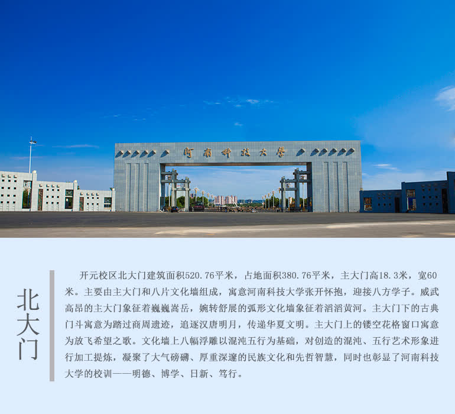
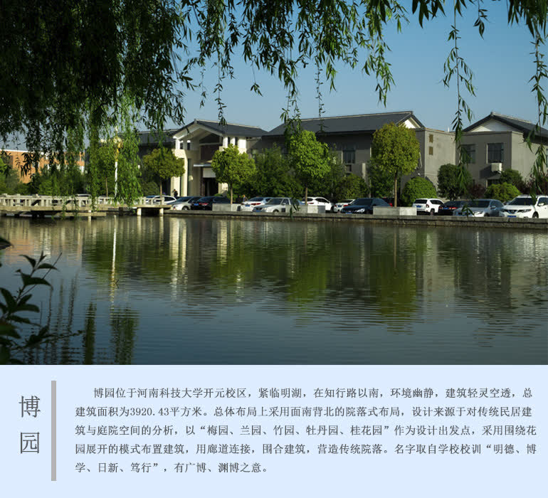
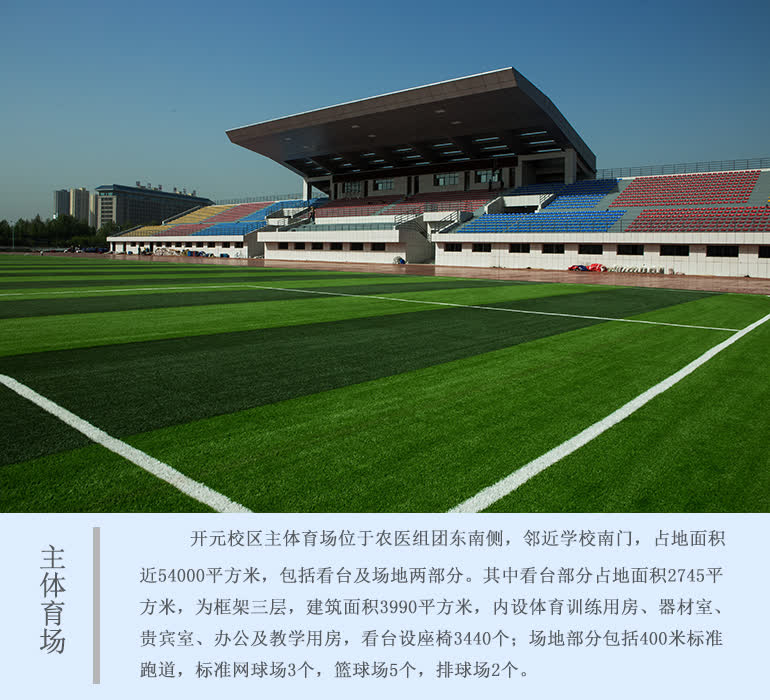
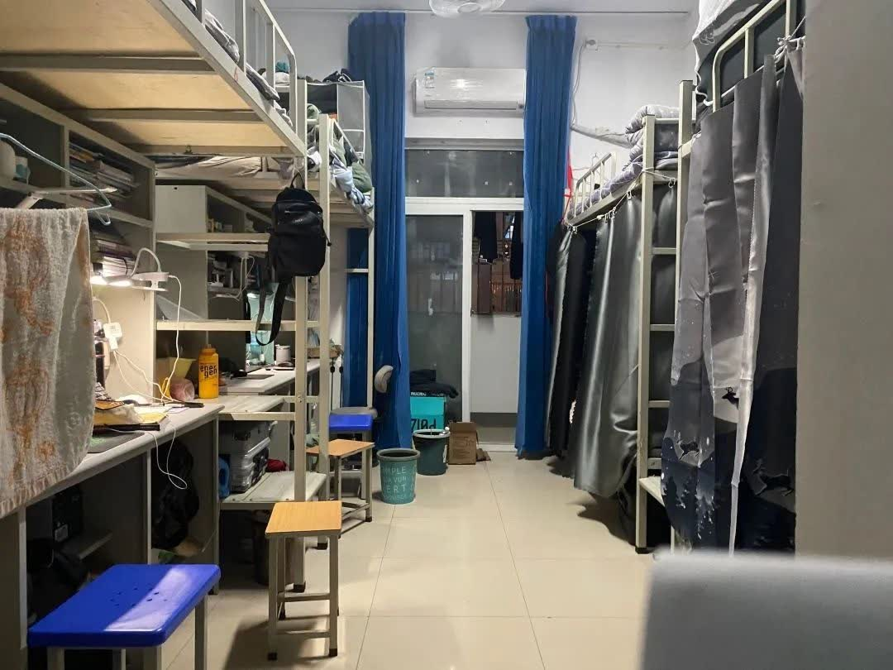
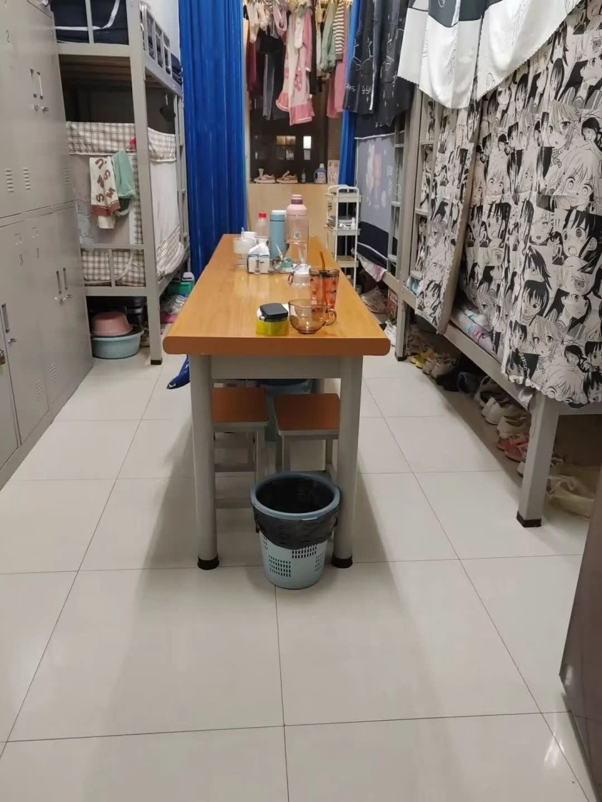
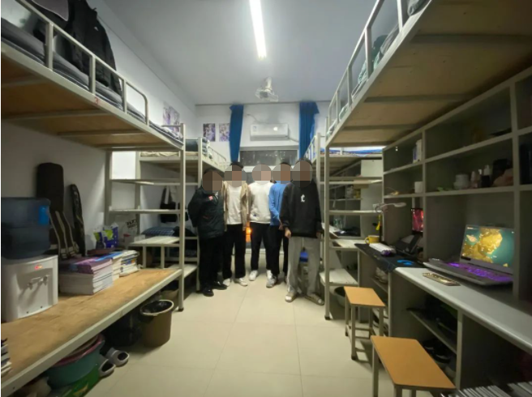
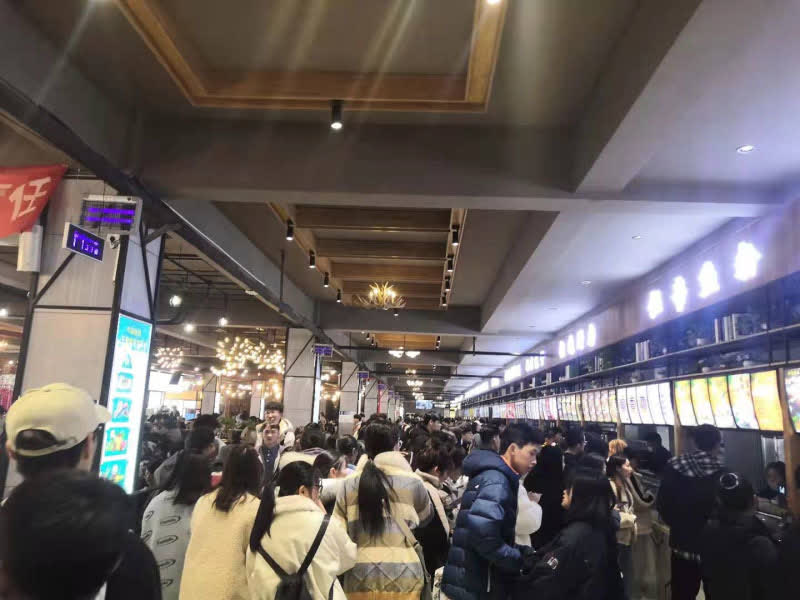
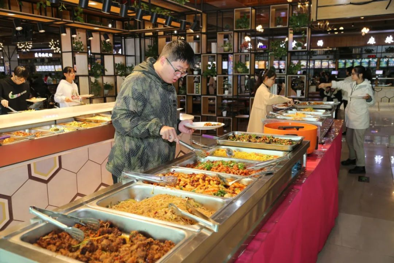
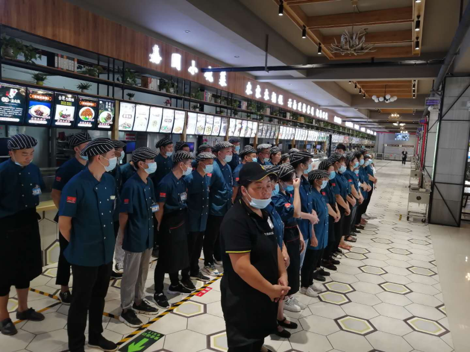

大一新生指南
明德 博学 日新 笃行
点卡片直接进对应页，不用一路往下翻
报到、军训、放假，重要日子一个不漏
两个校区、4100 亩，先认出你会在哪一个 👇



新校区 · 开元大道 263 号 · 大多数本科生的主校区
最早建成，12 栋楼，紧邻小北门
最现代，14–16 栋，分东西街
最新，10 栋六人间，快递集中在这
老校区 · 西苑路 48 号 · 机电 / 车辆 / 软件新生多在这里
工科重镇，几个老牌工科学院都在这儿
"轴承黄埔军校"，工科底气所在
南北两院的分界线，秋天红枫最好拍
就在市区，吃喝玩乐下楼就到
麻辣香锅、刀削面、卤肉饭，老校区烟火气
六 / 八人间上下铺，部分独卫
拖动可旋转，点按钮直接导航过去
校门提示：小北门 · 大北门 · 西门 可进出，南门 暂不开放。报到走大北门或西门最顺。
各楼栋床位与性别一览，最终分配以学校安排为准



三个食堂 + 一条龙翔街，吃饭这件大事不用愁

三层楼，环境最时尚

价格最亲民，学生党首选

"别人家的食堂"，有空调
河科大学子的"第二食堂"，一条街串起几代人的青春
从下车站到进宿舍，6 步走完报到
新生报到期间学校在洛阳高铁龙门站、洛阳北郊机场设有迎新点，志愿者接站并送到宿舍区。
STEP 02到达开元校区后先前往本学院迎新点，登记信息、领取报到证、办理学生证与校园卡。
到财务处缴费窗口或线上支付(学费按各专业公告，住宿费400-1000元/年)。如有困难可在迎新点办理绿色通道缓缴。
凭报到证领取校服、军训服、被褥床品(可自带也可购买)。床品包含被子、褥子、被套、床单、枕头等。
到宿舍区找楼管登记、领钥匙、找床位。证件类清单在「工具箱」里有可勾选的完整版。
2–3 周，洛阳 8–9 月很晒：防晒霜、鞋垫、水杯别忘
300+ 社团随便挑，周末还有十三朝古都逛
挑战杯、互联网+、数学建模、机械创新设计、机器人等竞赛培育地。
了解竞赛详情 →校广播台、大学生艺术团、话剧社、摄影协会、E-show街舞社、动漫社、书法协会。
了解校园文化 →篮球协会、足球协会、羽毛球协会、乒乓球协会、武术协会、跆拳道社、滑板社。
了解体育活动 →青年志愿者协会、爱心社、阳光支教团、红十字会学生分会。
了解志愿活动 →众创空间、龙门实验室资源，可申请工位和资金
了解创新创业 →先报名 → 笔试面试 → 做一年干事
了解学生会 →世界文化遗产，距学校公交半小时。北魏至宋凿建10万余尊佛像。卢舍那大佛17米高，必看。
查看百科 →中国第一古刹，佛教传入中国后建的第一座官办寺院。千年银杏与古塔值得慢游。
查看百科 →古城门+老街，小吃云集。不翻汤、浆面条、洛阳水席一条街，晚餐后夜游绝佳。
查看百科 →新建仿古文旅区，夜景灯火璀璨，适合汉服拍照打卡。门票免费但需预约。
查看百科 →含应天门、明堂、天堂三大复原建筑。武则天时期皇宫旧址，IMAX级历史沉浸感。
查看百科 →共24道菜，热汤菜为主。必尝燕菜(牡丹燕菜)、连汤肉片、焦炸丸子、假海参。
查看百科 →军训带啥、怎么来、快递填哪、啥不能带，一次搞定 🧰
9 月 12 日军训开训，勾上你已备齐的，别漏了
六大类逐项打勾，出发前不落东西
报到日高铁站、火车站都有学校迎新大巴直达校区，跟着志愿者走最省心
迎新时间与接站点位以学校官方通知为准。
收货地址照抄，取件 & 违禁提醒看下面
河南省洛阳市洛龙区开元大道263号 河南科技大学开元校区 XX 宿舍楼河南省洛阳市涧西区西苑路48号 河南科技大学西苑校区 XX 宿舍楼填四格生成身份卡，看看谁跟你同专业、同乡 👀
抽运势、摇食堂盲盒，还有两款自制小游戏
想抽几次抽几次，抽到满意为止 🎲
纠结症福音：摇出你今天的食堂盲盒
报到、宿舍、快递、食堂，问就完事
顶部导航就能切页，这几个入口是学长觉得你最可能用到的：